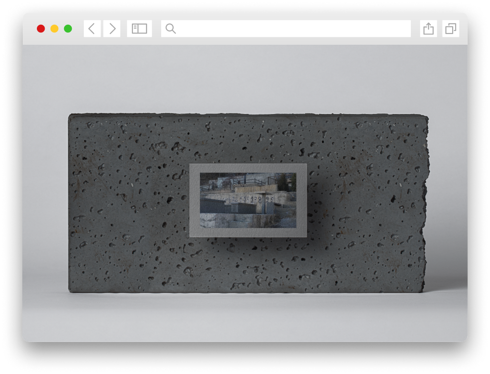

სიკვდილი დევნილობაში:
ვეძისის სასაფლაოს უჩვეულო ისტორია
წაიკითხე მეტი
სიკვდილი დევნილობაში:


A day in the life:
Same community, new house:

სამხრეთ კავკასიის რეგიონში ომის შედეგები სამმა თაობამ გამოსცადა. ბოლო 30 წლის განმავლობაში აფხაზეთის, მთიანი ყარაბაღისა და სამხრეთ ოსეთის კონფლიქტებმა სომხეთში, აზერბაიჯანსა და საქართველოში ათასობით ადამიანი დევნილად აქცია. თითოეულ კონფლიქტს თავისი ტრაგედიები და მსხვერპლი მოჰყვა. პოლიტიკამ, კულტურამ და საზოგადოებამ სამივე ქვეყნის მოქალაქეების ბედი განსაზღვრა. ეს პროექტი დევნილობის მიღმა ამბებს იკვლევს. იმ ადამიანების ბედისწერას, რომლებიც იძულებულები გახდნენ სახლები დაეტოვებინათ. საინტერესოა, როგორ უპასუხეს მთავრობებმა მათ გამოწვევებს და როგორ მიიღეს ისინი სხვა ქალაქებმა და სოფლებმა.